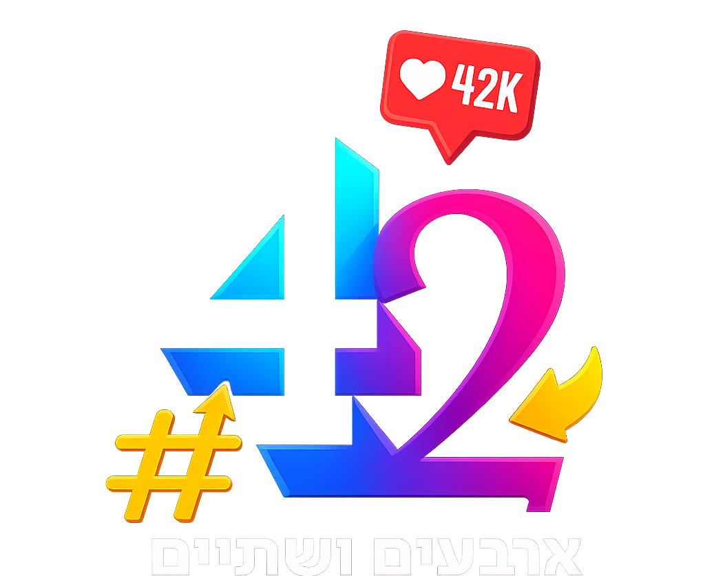

איפה העבודה של קלוד בעריכה רצה היום, מה עוצר אותה, מה בדקנו, ומה ההמלצה.
החשיבה של קלוד רצה אצל Anthropic, והג׳נרוט דרך אפריים. החיתוך, הגרפיקה, הרינדור והקבצים רצים על הלפטופ של כל עובדת.
הצוות עובד יומיים בשבוע מהבית, וזה עובד. המצגת עוסקת בעבודה של קלוד, שהיום צריכה לפטופ פתוח.
כשהמחשב נסגר או נרדם, כל מה שקלוד מריץ עליו נעצר באמצע, וממשיך רק כשפותחים אותו שוב.
היום אף אחד מהם לא אפשרי.
קלוד עובד על הלפטופ.
סופר של שתי שורות, נמדד על לפטופ של 42. על סוללה חלשה הכול איטי פי 2.5.
לא משאירים רינדור ללילה, ולא מתחילים עבודה מהטלפון.
הסשן של קלוד נשאר במחשב שבו התחיל. מעבירים עבודה דרך עותק בדרייב.
ffmpeg, פייתון, Node, כרום, קאפקאט, גופנים ודרייב, בכל מחשב מחדש.
ראיון של 26 שניות מאירוע של לקוח. קלוד בענן תמלל, ערך, הוסיף כתוביות, כותרת וכרטיס סיום, צפה בתוצר ותיקן. הלפטופ לא היה מעורב.
מהודעה אחת ועד סרטון מוכן
בערך של רינדור, הרכבה וקידוד
שקלוד מצא בצפייה ותיקן בעצמו
עבודה על הלפטופ
הסרטון נבדק גם בנפרד: הסנכרון מדויק בתוך פריים, והעוצמה מינוס 14 LUFS, כמקובל ברשתות.
בכל הדרכים קלוד חושב בענן כמו היום. ההבדל הוא איפה רצים החיתוך, הרינדור והקבצים.
המק מיני מכסה את רוב המצבים. הענן של Anthropic הוא הגיבוי כשהמשרד סגור.
אפליקציית Claude, לשונית Code. המק של העובדת מופיע ברשימה, עם סימן של מחשב. כותבים משימה, וקלוד עובד על המק.
התראה לטלפון כשהעבודה מוכנה, או כשקלוד צריך החלטהבדפדפן, בכתובת claude.ai/code. אותה רשימה ואותן שיחות, בלי להתקין כלום, גם מהבית.
אפשר לעבור בין הטלפון למחשב באמצע אותה שיחהלעריכה ידנית בקאפקאט שעל המק. במשרד החיבור מובנה במק. מבחוץ צריך כלי חיבור מרחוק, ובוחרים אותו בהקמה.
רוב העבודה לא צריכה את זההמק רק פונה החוצה לשרתים של Anthropic, ולכן לא פותחים את הרשת של המשרד.
כל אחת בסשן שלה, מהחשבון שלה. רינדורים כבדים במקביל מאטים זה את זה, ולכן המק נקנה בגודל של הצוות.
הבקשה מגיעה כהתראה לטלפון, ומאשרים משם. אפשר גם להגדיר מראש מה מותר בלי לשאול.
בנפילה קצרה העבודה ממשיכה. אחרי כ-10 דקות השליטה מרחוק נסגרת, וצריך להפעיל אותה מחדש.
מתחברים שוב למשתמשים במק, והשליטה מרחוק עולה לבד.
הקבצים נשארים על המק ובדרייב. השיחה עם קלוד נשמרת אצל Anthropic, ולכן בודקים מול לקוחות עם סעיפי סודיות.
עוברים לענן של Anthropic, כמו בניסוי. בלי הדרייב ובלי קאפקאט.
כלל אחד: בתחילת עבודה מחליטים איפה היא רצה. סשן לא עובר ממחשב למחשב באמצע.
מקורות: Anthropic, Apple ובאג · נבדק ב-18/11/2026
כל עובדת מתחברת אליו מהחשבון שלה, מהטלפון או מהדפדפן. הלפטופים נשארים כמו היום, והענן של Anthropic נשאר גיבוי כשהמשרד סגור.
קונים פעם אחת. המדידה מכוונת את המושבים ואת ההגדרות.
תודה.
